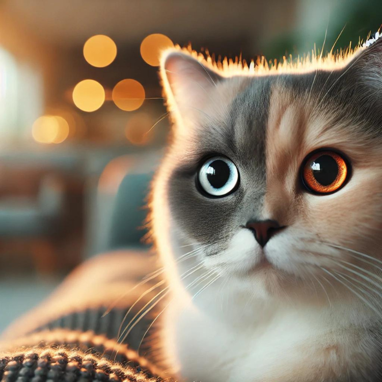

Unveil the secrets hidden within your cat’s gaze! Your cat’s eyes are more than just captivating—they serve as a crucial window into their emotional state. Whether it’s the enchanting allure of big, watery eyes or the sharp alertness of slit-like pupils, understanding your cat’s eye language can provide valuable insights into their feelings and reactions.
In fairy tales, cats are often depicted using their big, watery eyes to cast spells or charm their enemies. In reality, when your cat displays these large, glistening eyes, it typically indicates curiosity or interest. This look might be directed at something intriguing, such as a tantalizing can of food or a fluttering bird outside the window.
Important Note: If you notice your cat giving you this look while you’re eating, it’s their subtle way of begging for a treat. However, if you observe that their pupils are dilated to the size of their eyes and they start drooling, this could signal extreme fear or stress. It’s essential to be mindful of these signs and respond appropriately to ensure your cat’s comfort and safety.
When your cat’s pupils are neither dilated nor constricted, it generally means they are feeling calm, relaxed, and at ease. This is the ideal time to interact positively with your cat. Gently petting or cuddling them during this state can strengthen your bond and provide them with a sense of security. Cats that display normal-sized pupils are usually enjoying a peaceful moment and are open to affectionate gestures.
Slit-like pupils in cats, especially when not influenced by bright lighting, are a common indicator of heightened alertness, aggression, or discomfort. During these times, your cat might be feeling threatened or on high alert. It’s advisable to give them space and avoid approaching them to prevent potential scratches or bites.
Pro Tip: While narrow pupils can signal aggression, they can also indicate satisfaction in some contexts. Pay attention to other body language cues, such as a relaxed tail, purring, or a calm demeanor, to get a clearer picture of your cat’s mood.
Cats possess six times more light-sensing cells in their retinas than humans, making them highly sensitive to changes in light. This heightened sensitivity allows them to adapt quickly to varying light conditions. Additionally, their retinas contain a reflective layer known as the “tapetum lucidum,” which significantly enhances their vision in low-light environments. This adaptation is crucial for their nocturnal activities, including hunting and navigating in dim conditions.
If you observe that one of your cat’s pupils is larger than the other, there’s no need to panic. This asymmetry is a normal aspect of feline vision and is part of their ability to regulate light intake. However, if this condition is accompanied by other concerning symptoms such as unsteady walking, noticeable changes in behavior, or difficulty jumping, it’s advisable to seek veterinary advice. These symptoms could indicate underlying health issues that require professional attention.
Understanding the various signals conveyed through your cat’s eyes is essential for interpreting their emotions and needs. From the serene calmness reflected in normal pupils to the heightened alertness of slit-like pupils, your cat’s eyes offer a wealth of information about their state of mind. By paying attention to these visual cues, you can foster a deeper connection with your feline friend and respond to their needs more effectively. So, the next time your cat gazes at you with those expressive eyes, you’ll have a better understanding of what they’re trying to communicate!
Want to gain a deeper understanding of dog behavior and how to care for them? Click the link below to read more related articles. read more related articles
Looking for products for your cat or dog? Check out the articles linked below for more information and recommendations. Explore more articles
Looking to transform your pet’s behavior or enhance your training skills? Discover our top recommended eBooks packed with expert tips and practical advice. Check out the links below for more details and to find the perfect guide for your pet training needs. Explore our eBooks